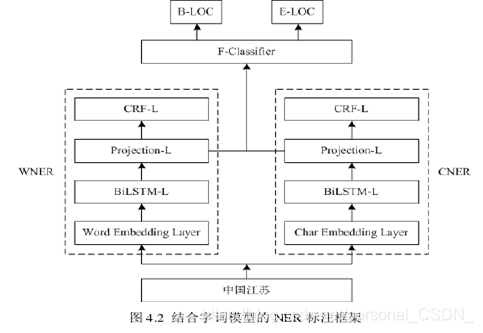

基于主题模型和命名实体识别的自动摘要方法¶
1 命名实体识别¶
命名实体识别（Named Entity Recognition，NER）是信息抽取、信息检索、意见挖掘以及问答系统等自然语言处理任务中不可或缺的关键技术，其主要任务是识别出文本中表示命名实体的成分，包括人名、地名、日期等并加以归类，因而也被称作命名实体识别和分类（Named Entity Recognition and Classification，NERC）。
NER的方法可以分为：基于规则的方法、基于统计的方法以及综合的方法等。
1.基于规则的方法
基于规则的方法是早期NER中常用的方法，需要由人工构建有限规则。
基于规则的方法通常依赖于具体语言特性、所属领域以及文本风格，导致早期NER系统的制作周期较长且移植性不好，不同领域的系统需要该领域的语言学家构建不同的规则。为了克服这些难题，研究者们尝试利用计算机自动地发现和生成规则，Collins等人提出的DLCoTrain 方法最具代表性，该方法根据语料对提前预定义的种子规则集进行无监督的训练迭代生成规则集，并利用规则集对语料中的命名实体进行分类，最终的结果表明了该方法的有效性。一般而言，当提取的规则能准确地反映语言现象时，基于规则的方法在性能上要优于基于统计的方法。
2.基于统计的方法
机器学习在自然语言领域的兴起使得基于统计方法的NER研究变得火热起来，基于统计的方法只需要合适的模型就可以在较短时间内完成对人工标注语料的训练，方便快捷并且无需制定规则。基于统计方法开发的NER系统很快就成为主流，这类系统不仅在性能上较好，而且具备良好的可移植性，在跨领域移植时只需训练一次新语料即可使用类。能适用于NER的机器学习方法有很多，例如隐马尔可夫模型（Hidden Markov Model，HMM）、支持向量机（Support Vector Mach ine，SVM）、条件随机场（Conditional Random Fields，CRF）、最大熵（Maximum Entropy，ME）等。
选择更好的特征表示能有效地提高命名实体识别的效果，因而基于统计的方法在特征选取有较高的要求，依据任务要求从文本中选择所需的特征，并利用这些特征生成特征向量。对于特定命名实体的识别存在一定的困难性，依据该类实体的特性，对训练语料所包含的语言信息进行统计和分析，从而挖掘出有效的特征。
3.综合的方法
目前的NER系统都是使用综合方法来识别命名实体，从而避免单纯一种方法存在的弊端。将机器学习和人工知识结合起来，在基于统计的学习方法中引入规则知识501，达到过滤修剪的效果，进而减小状态搜索空间；同时也可以将算法与各种模型相结合，使得算法进一步优化，提高命名实体识别的准确性。
从NER被提出以来，NER的发展基本经历了一种从规则向统计的转向。随后又出现了深度学习新热潮，使得NER在统计机器学习的道路上继续前进，虽然NER的研究成果已遍地开花，但还是一个需要解决完善的问题，尤其是一些特定领域的NER。目前对NER的研究也大多固化于调整经典模型、挑选更多特征、扩大语料规模这种三角模式，这是值得研究者们反思的。
2 LDA主题模型¶
LDA（Latent Dirichlet Allocation），即潜在狄利克雷分布模型是一种非监督的文本主题生成模型，三层分别包括文本、主题以及词结构。该模型可以有效地从大规模文档集和语料库中提取出隐含的主题，且具备良好的降维能力、建模能力、扩展性。LDA的图模型结构如图4.1所示。
3 基于字词的BiLSTM-CRF模型构建¶
基于BiLSTM-CRF的命名实体识别方法，该方法采用双向长短期记忆网络（Bi-directional Long Short-Term Memory，BiLSTM）来学习句子的上下文信息，并充分考虑到标签的依赖关系，使得标注过程变得有据可依，而不再是仅仅对每个词语的简单分类，基于BiLSTM-CRF进行中文命名实体识别的方法有两种：基于字的BiLSTM-CRF方法和基于词的BiLSTM-CRF方法。基于字的命名实体识别方法未充分考虑文本中词语的语义关系，会导致识别效果不佳；基于词的命名实体识别方法则需要先对文本中的句子进行分词，分词结果的好坏会直接影响到识别效果。为了克服使用单一模型时的不足之处，本文将有效融合基于字和基于词的方法，致力于提高单一模型命名实体识别的准确性。结合字词模型的命名实体识别标注框架如图4.2所示，该框架主要分为三部分：基于字的BiLSTM-CRF模型（记为CNER）、基于词的BiLSTM-CRF模型（记为WNER）和结合CNER和WNER两个模型的最终分类器。在图4.2中，BiLSTM-L表示BiLSTM层，Projection-L表示投影层，CRF-L表示CRF层，Char Embedding Layer和Word Embedding Layer分别表示基于字、词的向量映射层。

如图4.2所示，把地理位置“中国江苏”作为输入输送到框架中，经过该标注框架的处理之后，输出了B-LOC、E-LOC的标注结果，其中B-LOC表示地理位置的开始部分，即“中国”，E-LOC则表示除去“中国”的结尾部分“江苏”，这表明该标注框架的有效性。
基于模型融合的思想，本文把基于字的BiLSTM-CRF和基于词的BiLSTM-CRF作为基模型。为了避免出现过拟合的情况，把训练集分为两部分，前一部分用来训练基模型，在基模型训练好后，再把后一部分送入训练好的基模型中训练，从而获得字模型、词模型各自投影层的分值向量，最后，拼接好运算后分值向量，并把它们作为特征送入最终模型进行训练。本文中字模型和词模型的架构是一致的，每个模型都分为4层：向量映射层、BiLSTM层、投影层和CRF层。其中，字模型的架构图如图4.3所示.
4 结合BiLSTM-CRF模型和LDA主题模型的自动摘要¶
4.1 算法思想¶
命名实体识别（NER）在自然语言处理任务中发挥着重要的作用，本文利用改进的BiLSTM-CRF模型来识别中文文本中的命名实体，从而得到文本中有用的人物信息、地点信息以及发生事件的机构信息，基于此对关键词提取时构建的TextRank词图中词语节点的权重进行调整，使得关键词提取的准确性更高；文本摘要旨在准确地反映文本主题，但现有的很多自动文摘算法都没有考虑文本主题，这导致生成的摘要不尽如人意，为了达到自动文摘更加贴近文本主题的目的，本章将LDA主题模型引入到文本摘要的生成过程中，结合LDA与改进的TextRank算法，进一步优化句子权重的计算。
4.2 算法实现¶
文本摘要算法的流程图如下图所示：
5 实验结果与分析¶
5.1 实验数据与评价标准¶
LCSTS数据集是目前国内较大型的公认中文数据集，数据集中的内容是从新浪微博中爬取并过滤的规范文本集，LCSTS数据集的构建为中文文本摘要的深入研究奠定了基础。数据集LCSTS是由哈尔滨工业大学于2015年发布的，其主要包括三个部分：PARTI，PARTIⅡ，PARTIⅢ。其中，PARTI是对自动摘要模型进行测试的数据集，采用人工标注评分，评分范围为1~5，评分越大表示摘要与短文本越相关，反之则表示二者相关程度越低。为了保证实验测试数据集的质量，本文选取PARTII中评分为“4”和“5”的数据构建模型的测试数据集。
ROUGE 评价方法一直被广泛应用于文本自动摘要的质量评价上，因此本文采用Rouge指标来对算法生成的摘要进行评价。本文选取Rouge-1、Rouge-2、Rouge-3、Rouge-L四种评价指标来评价算法生成摘要的质量。
5.2 对比实验与结果分析¶
为了对本节提出的算法进行验证，本文设置不同算法的对比实验，将本节方法与降维处理后的TF-IDF算法、现有研究中基于TextRank的优化算法iTextRank以及DK-TextRank、本文的SW-TextRank 算法以及Topic Model算法61设置对比实验。在LCSTS数据集上进行相应的对比实验，并指定生成摘要的压缩比分别为10%和20%。
在LCSTS数据集上进行两组实验，分别是压缩比为10%和压缩比为20%。
压缩比为10%的实验结果如表4.1所示。
其中，压缩比为20%的算法对比实验结果如表4.2所示。
为了给出更直观的显示，将表中的实验结果集绘制成直方图，分别如下图所示。图4.5对应表4.1中的实验结果，即压缩比为10%的算法对比实验。
下图4.6对应表4.2中的实验结果，即压缩比为20%的算法对比实验。
5.3 生成摘要对比¶
对比表4.3中的摘要可以发现，本文方法生成的摘要与标准摘要表达的主题几乎一致，能够很好地贴近原文主旨，虽然与标准摘要不完全相同，但基本不影响其表达文本主题，这说明引入LDA主题模型是有成效的；并且生成摘要能够契合原文的思想内容，不忽略原文中的关键信息，从侧面表明了BiLSTM-CRF模型有效性。总体来说，本文方法生成的摘要能较好地反映原文主旨，且语意连贯，便于理解。
6 总结¶
本章首先对命名实体识别和LDA主题模型的相关概念进行了详细的介绍:接着阐述了有关BiLSTM-CRF模型的研究现状，并在此基础上对该模型进行改进，将基于字和词的BiLSTM-CRF方法有效结合起来，这样不仅克服了单一方法存在的弊端，也提高了实体识别的准确度；然后，将优化的BiLSTM-CRF模型与LDA主题模型共同引入到文本自动摘要的提取过程中，对提取过程进行优化，从而提高最终生成的文本摘要的质量；最终通过实验验证了该方法的有效性。
凡本网注明"来源：XXX "的文/图/视频等稿件，本网转载出于传递更多信息之目的，并不意味着赞同其观点或证实其内容的真实性。如涉及作品内容、版权和其它问题，请与本网联系，我们将在第一时间删除内容！
作者: personal_CSDN_
来源： https://blog.csdn.net/personal_CSDN_/article/details/118254011